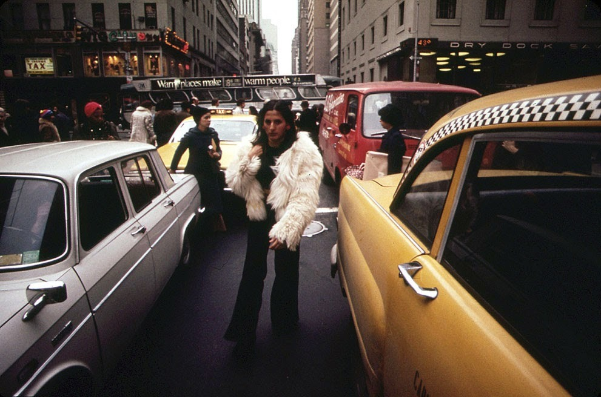
Pedestrian chaos in the 70s
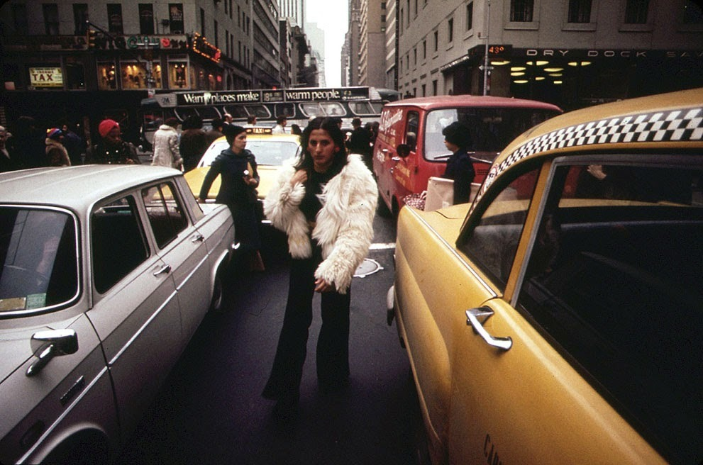
Pedestrian chaos in the 70s
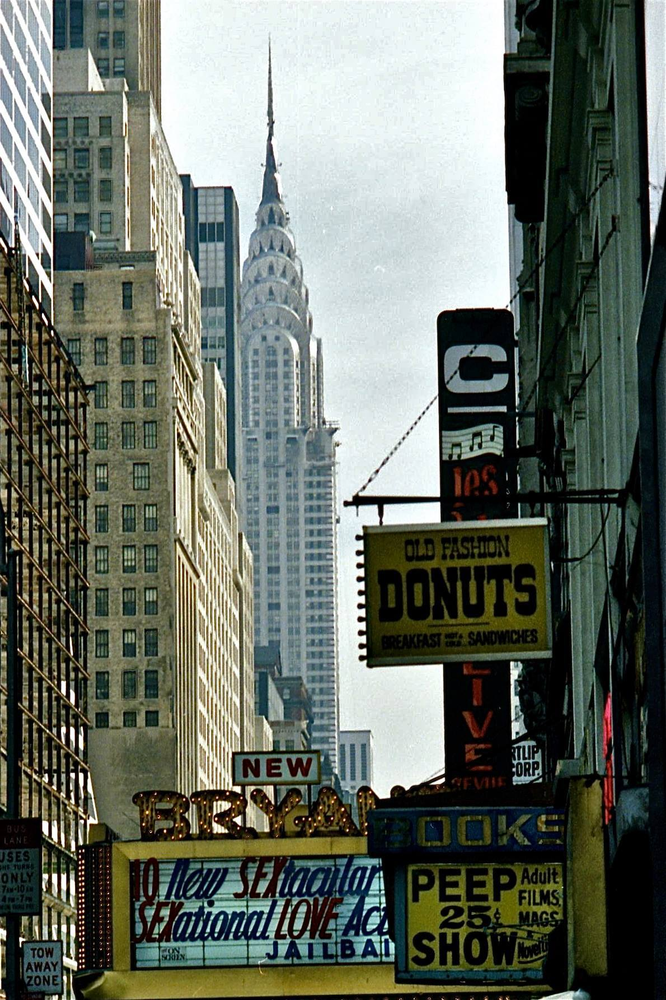
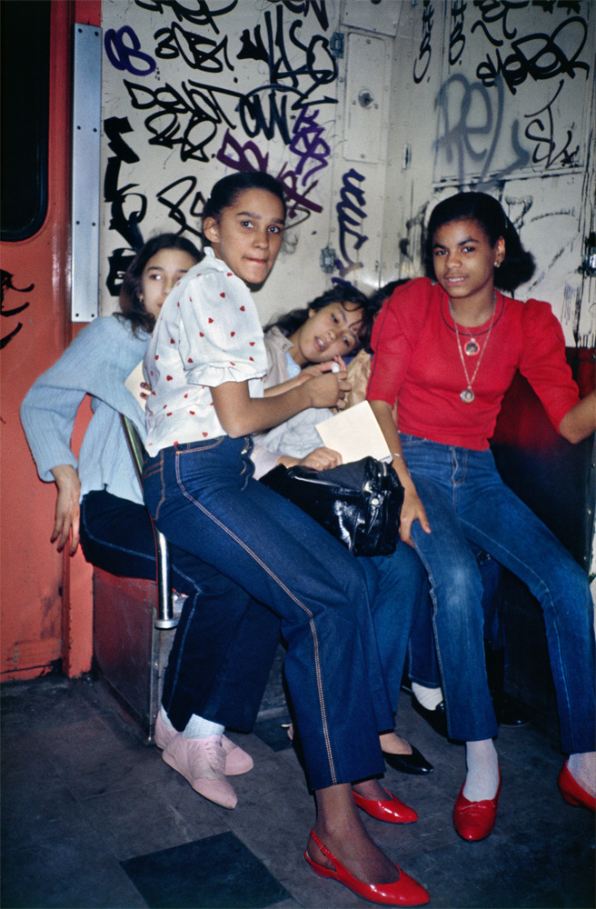
No seat; no problem

7th Avenue South, 1978
Photo credit: John Hagman, Hagstar Studios

Under Brooklyn Bridge including some interesting graffiti and an apparent pile of debris on the other side of the fence. From a batch of badly faded photos, this is my shot from 1989.

East River Park amphitheater, 1988
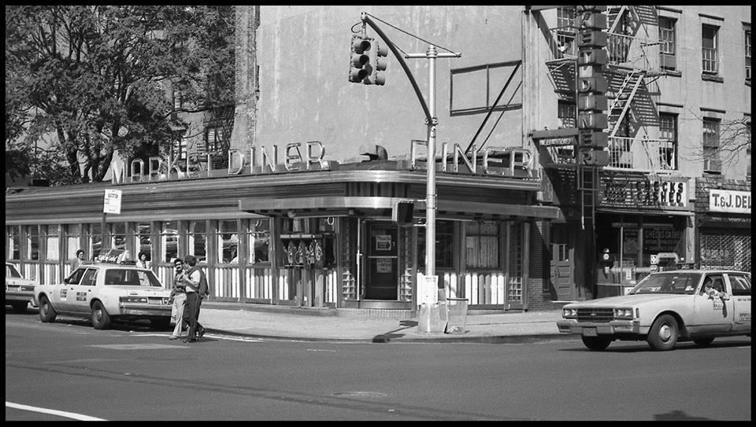
Market Diner, 1985

‘The God Piece. Earth Is Hell’ LEE
1977

The king of the WTC

‘HEROIN KILLS’ by DONDI - ZEPHYR

High fashion getting a visual smackdown on the 6 train.

St. Marks Place, 1969.


1980s subway

Handshake Bushwick, Brooklyn, NY, September 1984, Meryl Meisler (source)

Soho, late 80s

Jammin’ in Central Park, 1980s
New York street corner, 1956

Harry Benson R Crumb on the Subway, New York City 1968
“I was totally amazed. This little home made underground comix thing was turning into a business before my eyes. It went from us going around Haight Street trying to sell these things we had folded and stapled ourselves to suddenly being a business with distributors, lawyers, contracts, and money talk. … The whole thing began to take on a heaviness that I believe had a negative effect on my work. I was only twenty-five years old when all this happened. It was a case of ‘too much too soon,’ I think. I became acutely self-conscious about what I was doing. Was I now a ‘spokesman’ for the hippies or what? I had no idea how to handle my new position in society! … Take Keep On Truckin’… for example. Keep on Truckin’… is the curse of my life. This stupid little cartoon caught on hugely. … I didn’t want to turn into a greeting card artist for the counter-culture! I didn’t want to do ‘shtick'—the thing Lenny Bruce warned against. That’s when I started to let out all my perverse sex fantasies. It was the only way out of being ‘America’s Best Loved Hippie Cartoonist.’” R Crumb
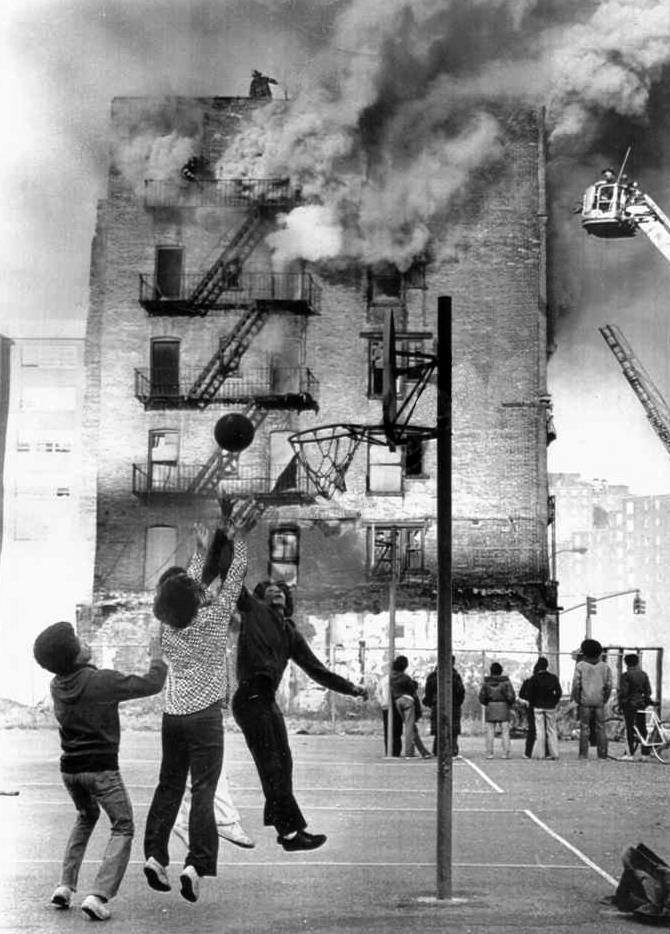
101st and 1st, 1975

An RR train at the “other end” of the line in Queens. The cars are R-42s, the station is Astoria Boulevard/Hoyt Avenue, the date is June 20, 1970, and the beer is Schaefer when you’re having more than one. These days this station is serviced by the N line, not the R. Photo from the George Conrad collection.

80s cabs

In the 70s, gangs of seniors took over the islands on Broadway, terrorizing the Upper West Side with their dangerous canes and withering stares.

Surf’s up! I guess for a while there was an actual beach down by the WTC. Unrented space in Manhattan?!? Developers couldn’t allow that for too long.
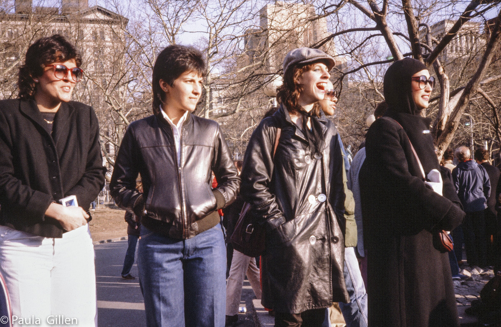
80s fashion, near NYU

I’m not sure what station this is, but it looks like some of the stops on the A train, above 125th.
East side of 42nd Street between 7th and 8th Avenues, ca. 1995
Photo by Stephen F. Harmon
South Side of 42nd, 1995

New York 1963

West Village 1980s

Stanley Kubrick, The N.Y.C. Subway 1946

72nd St subway entrance, 1935

Dudes peeing on a construction site?

Tom Waits and Jim Jarmusch in the East Village, 1985
Holy shit, just passed 10,000 followers! Thank you, you crazy nostalgia lovers!

23rd and 5th, 1974

She’s a rebel.

Late 70s subway
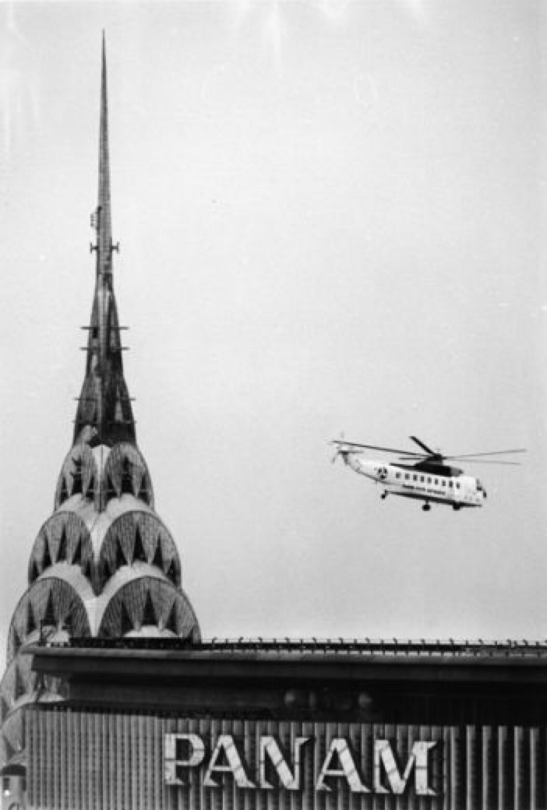

Boro Park, Brooklyn, 1970s

Stars of the Topless Go Go

Apparently, The Adelphi Theater existed on 89th and Broadway, in the early 1900s. I suppose this shot is looking West and a little South, though I’m having a hard time wrapping my head around the geography.
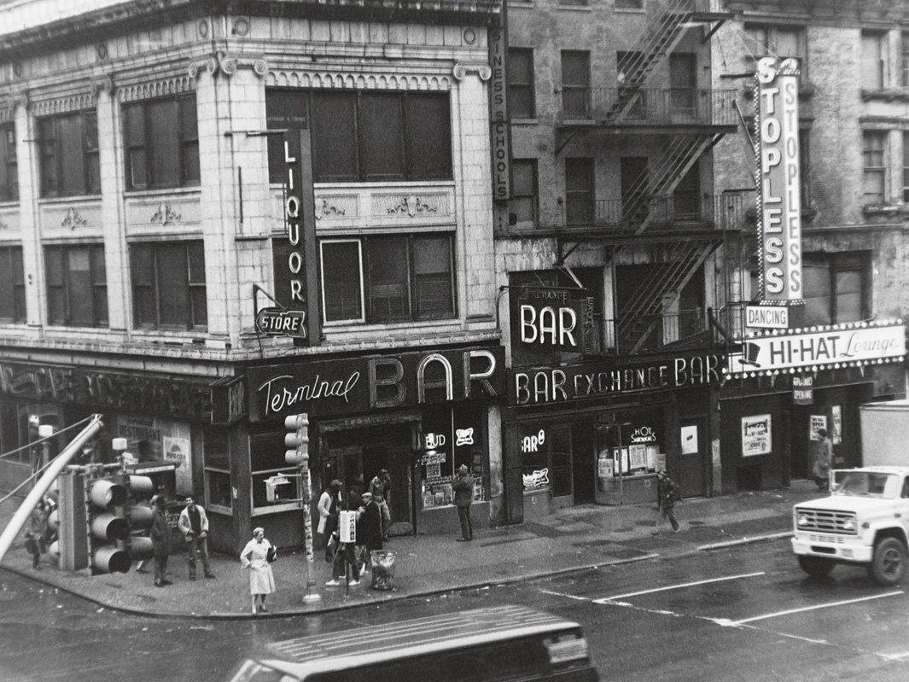
Terminal Bar, 1970s
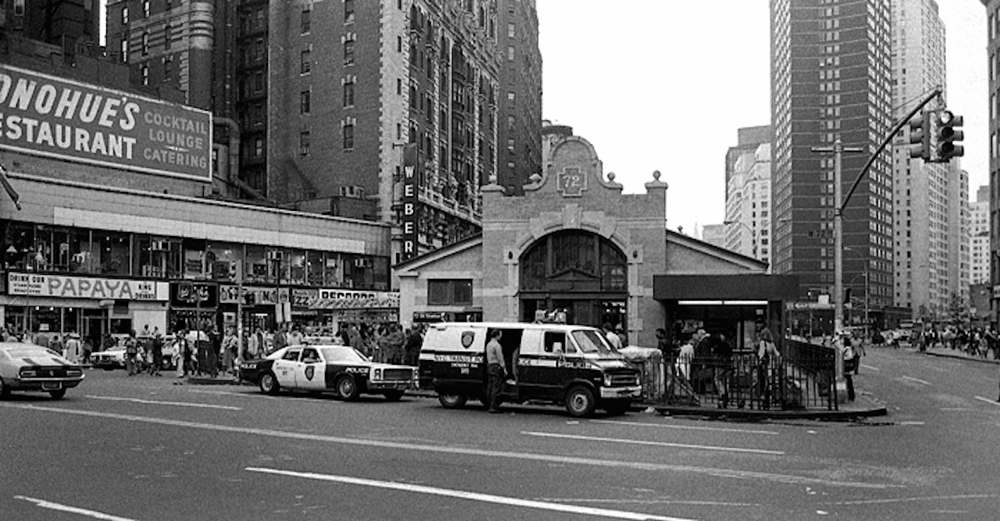
72nd and Broadway, 1978

undr:
Roof Top Views, New York (1958)
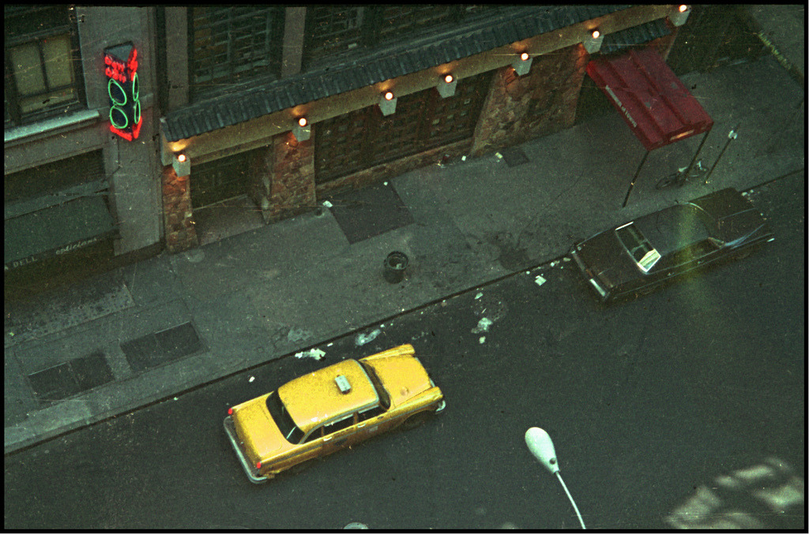
W 44th Street, 1979
Lower Manhattan street scene, 1960, by Charles Cushman. Gothamist ran a feature today about the Cushman photo archive, including a helpful link and nine other gorgeous photos like this one. Check it out here,
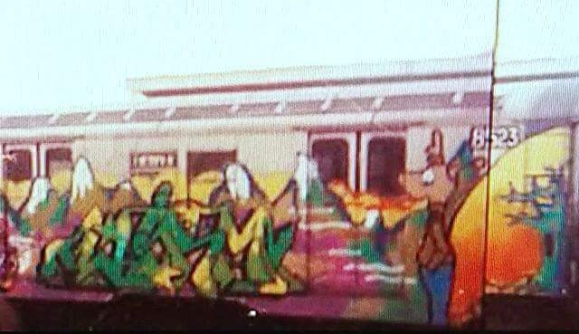
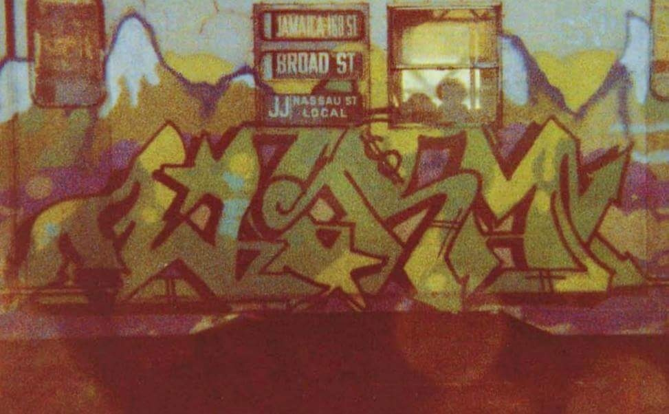
WIRM (DONDI) <br>
including close up shot
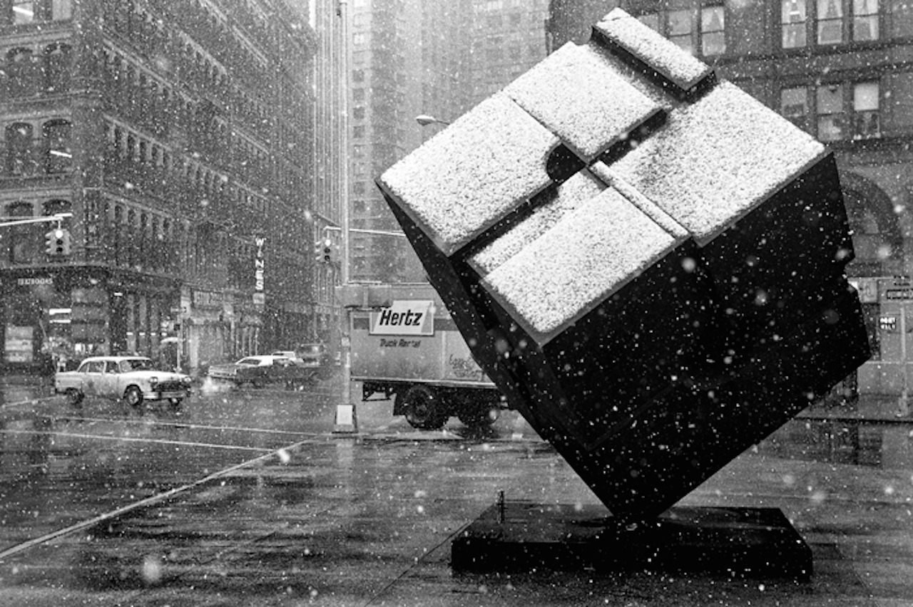
Astor Place 1978

The Thalia, Broadway and 95th

The filthiest show in town.